Bộ ảnh đề xuất gồm 44 màn hình và biểu mẫu, chia thành 11 nhóm. Chạm vào ảnh để mở bản gốc và phóng to. Các form thêm và sửa dùng chung bố cục; nút thao tác khi triển khai sẽ hiển thị theo quyền của từng vai trò.
Đây là ảnh concept để duyệt phong cách và cách bố trí. Chữ, số liệu, ảnh đại diện và dữ liệu trang trại dùng để minh họa. Các màn dài sẽ cuộn khi triển khai; chưa thay đổi mã ứng dụng.
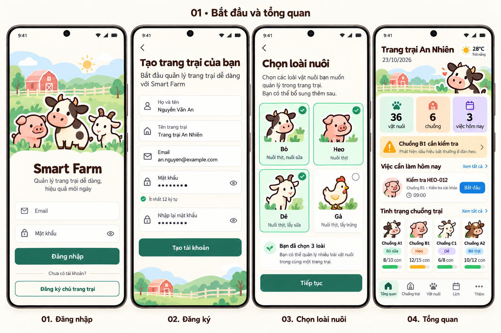
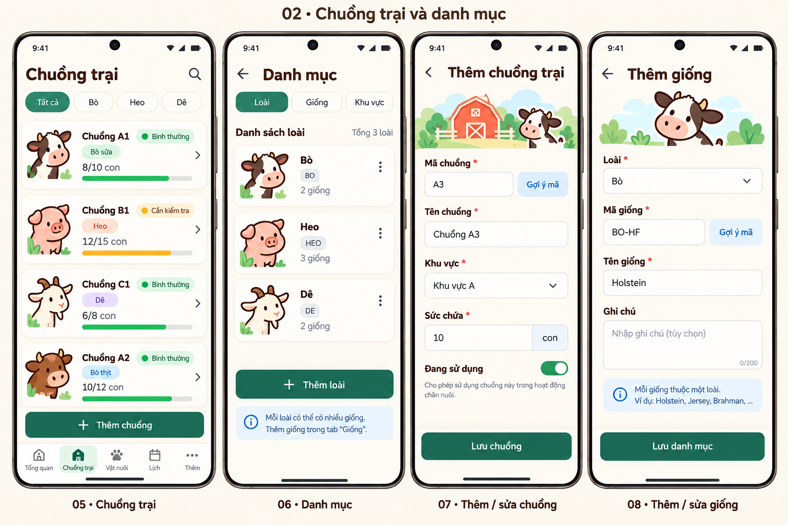
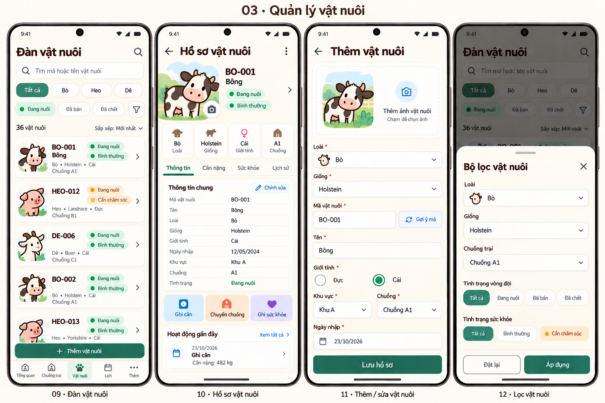
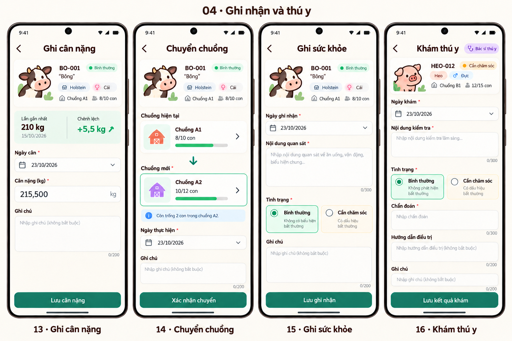
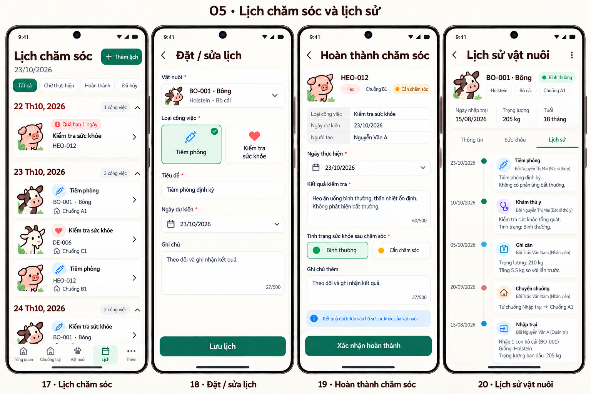
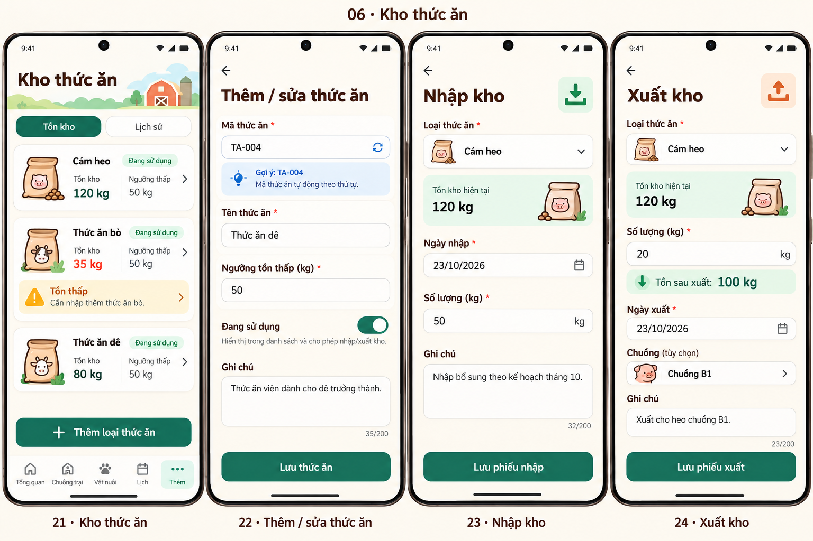
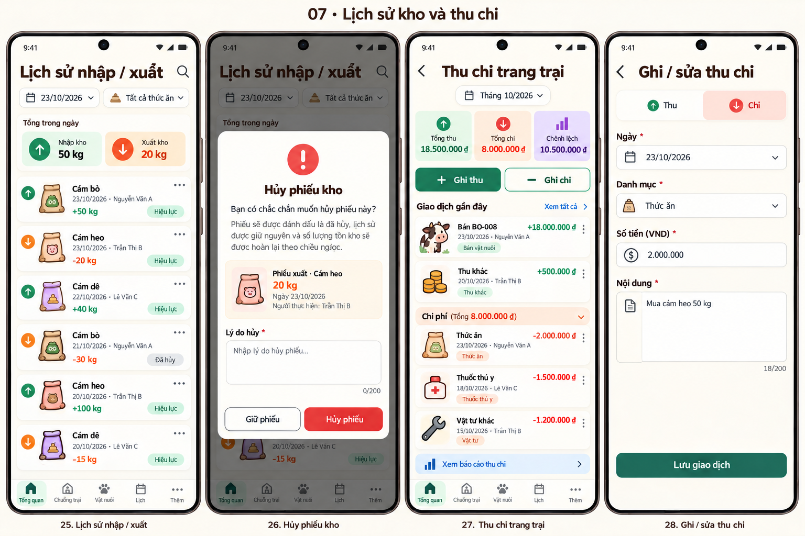
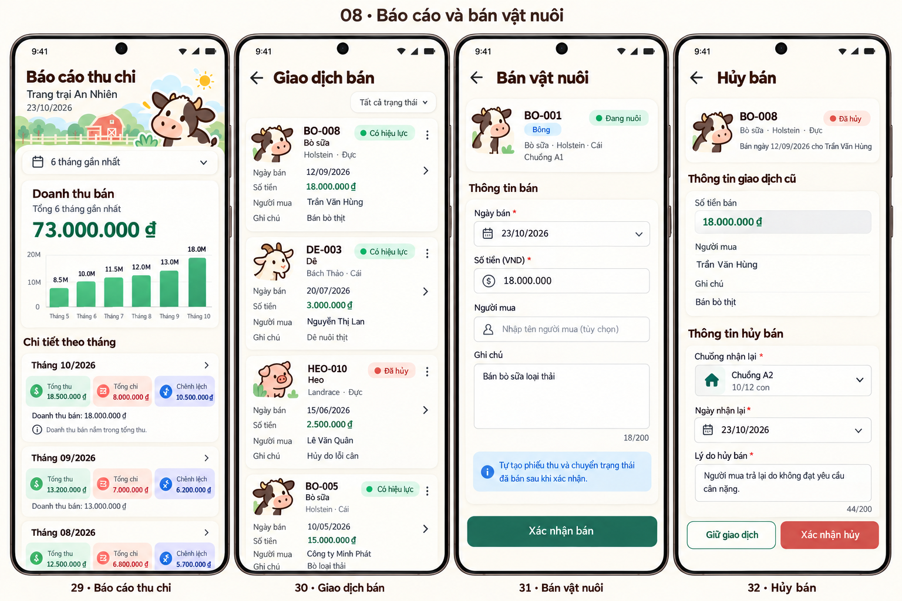
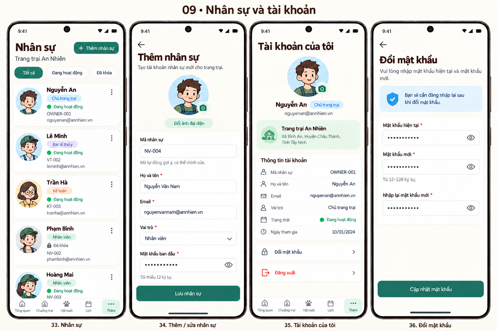
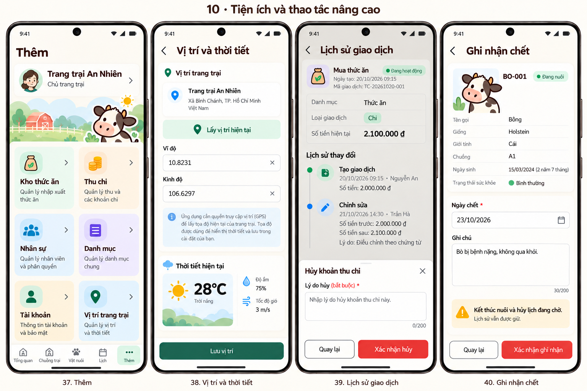
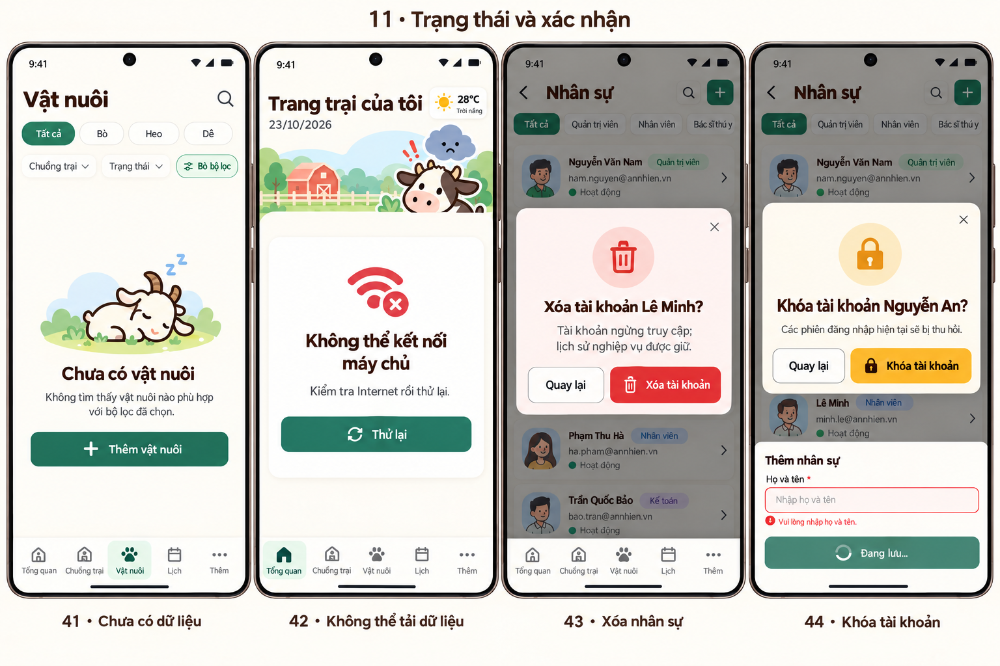